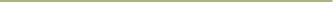

Have A Roll

Duurzame
Have A Roll is een vegan bakkerij die heerlijke plantaardige lekkernijen en vegan koffie aanbiedt. Geniet van zoete traktaties, hartige snacks en lekkere koffie, allemaal diervriendelijk en duurzaam.
Menu


Hun verhaal
Onze eigenaar hield al van bakken toen hij een tiener was in het huis van zijn ouders. Deze passie stopte echter tijdens zijn studie en het werken als freelancer, wat vaak reizen en verhuizen naar een klein appartement in de stad met een kleine keuken betekende. Het reizen over de wereld maakte hem goed bekend met kaneelbroodjes, aangezien hij ze graag at in steden zoals Londen of New York. Helaas was er in België geen plek die deze heerlijke, zoete traktaties uit de hemel serveerde.